Map Author: CTMC
Origin: Map Link
Versions: MC = 1.20.4 - Map = 1.0.1
Presentation
Mapwreck 7 - Subterranean is a full length CTM map. It was made under a week with a high amount of participants. Each iteration sees changes to improve the workflow and deliver a better end product.
Overview
Land of the Sandman - Orange
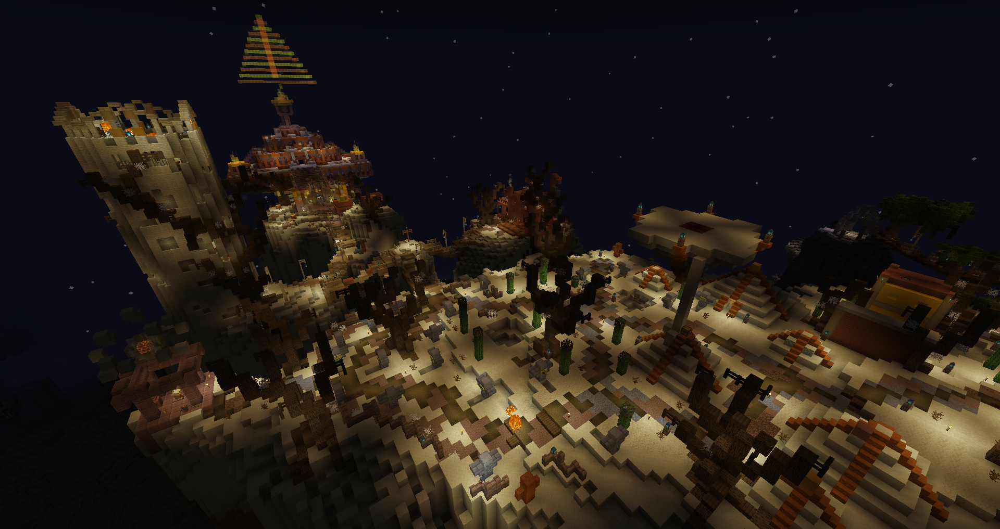
Where I really started the map, looking more appealing and pretty fun. The area gets a 10/10 for having the Enter Sandman disc. The two currencies specific to the area burden it, it only has uses for one NPC and takes way too much inventory space. Can’t even use the ender pouch to store it because you need it while doing the area. A great introduction to the map overall.
Overgrown Ruins - White
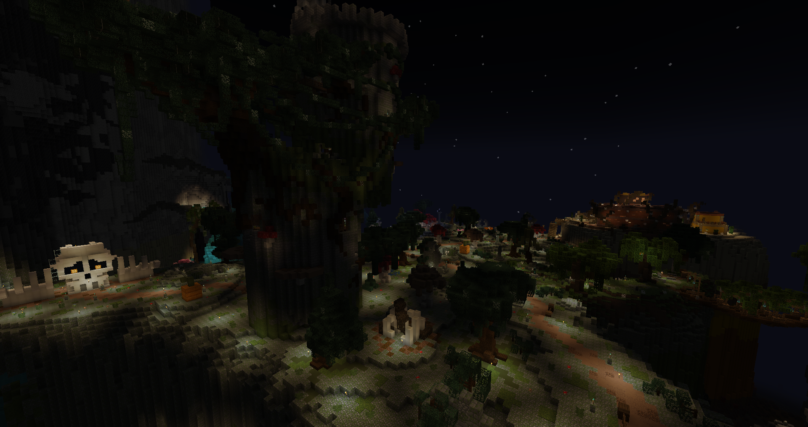
Starting the map with the tutorial is interesting and a nice way to teach some more complex systems not everyone knows that well, big contrast from Mapwreck 6. The contrast is also made with a very flat follow-up, not sure where to go it felt like a field with generated content. The second part of the area had more layout quality and enjoyment.
Moonlight Lake - Monument
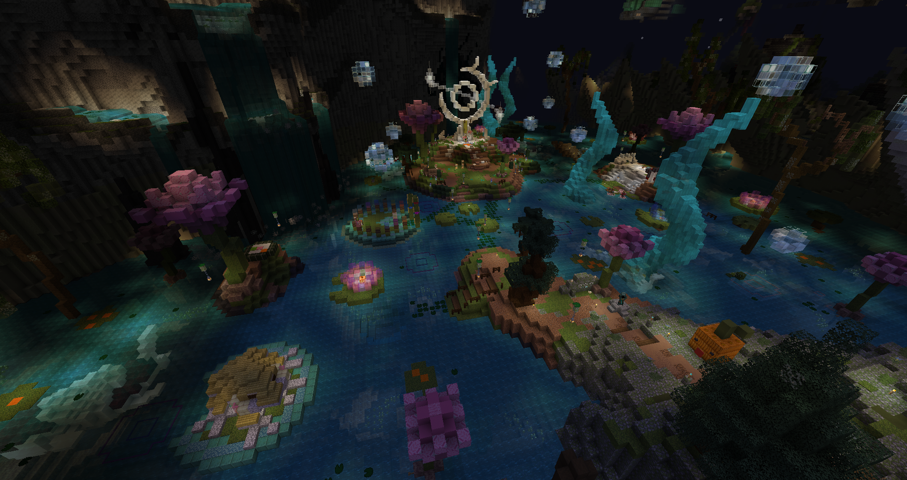
I’ll always be not a fan of putting the monument and functional parts separate(especially the TP/utilities), even if it’s not too far here. Loving the portable tp, and wow what a great ability to bring back npcs! In terms of aesthetics, the koi and bubbles give a lovely mystical aspect. Monuments are getting fancier with all the custom tech and dynamic monuments, it’s good, but I’m also a grumpy person and I like the action of placing each objective to its definite place instead of autosorting.
The Exclusion Zone - Magenta
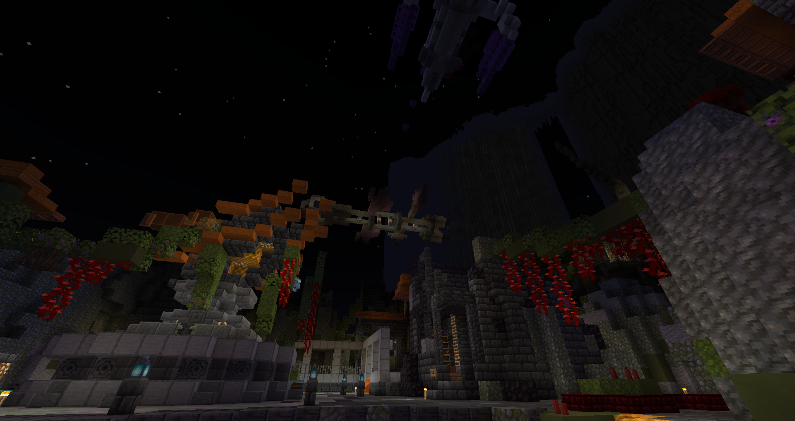
It ended quite fast, the inside felt a bit messy. Pretty standard, the theme’s identity didn’t feel significant enough. I quickly went to Light Blue.
Cursed Mines - Light Blue
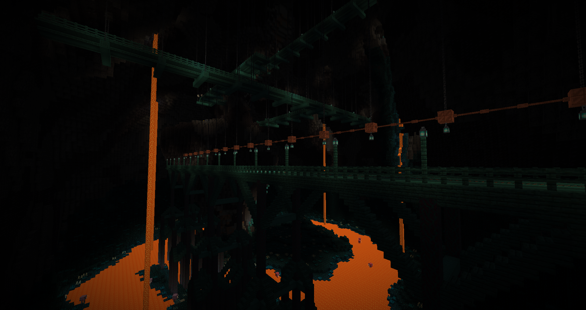
The rails made combat AI a bit awkward, aside that it was fun to play with a nice theme. The sensors are positively frightening even if they don’t spawn the warden, truly cursed. It’s not classified as one, but it’s an intersection area for sure.
Crystalline Caverns - Yellow
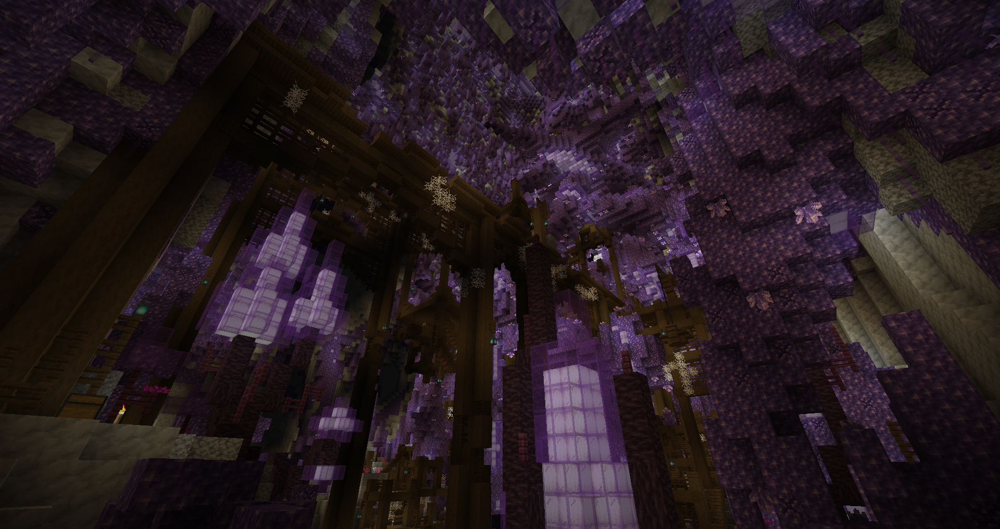
Another banger, probably just projection but it reminded me of Veiled Exodus with the calcite and warm colored ground, along the labyrinthic tunnels. The mobs felt abundant and sadly I think it was quite apparent the basic mobs had a lot of armor, making combat awkward with some weapon types. The new mob range also means a huge amount of extra hits compared to before, it’s going to give me ptsd from being mobbed. Found an insanely amazing chestplate that makes my build, full health no armor, go Vitality Plating! (Editor’s note: it was nerfed later)
Hexacitadecimal - Gray
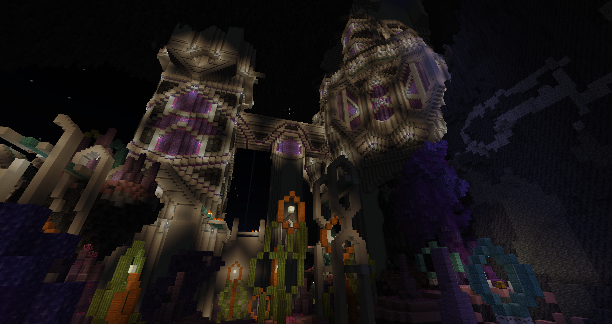
Even if the initial impression was mitigated by the mechanic having an awkward start (some number ranges chosen for the levitation made it not pleasant to use in the central room), the final room was perfect and made me engage with it again despite stopping earlier - honestly, I don’t want to blame the area too much because levitation is inherently frustrating for the player by taking away control, and it wasn’t done poorly here. Overall a pretty solid area which I enjoyed despite dying twice for the same reason in the same room(I already had over twice normal health at that point). The area has some fantastic unique items as well, my favorites being the Forkinator and Arcane Reaver. The vibe is pretty surreal, although the outside is less interesting to play due to being more of wilderness paths.
Hellfire Ledges - Blue
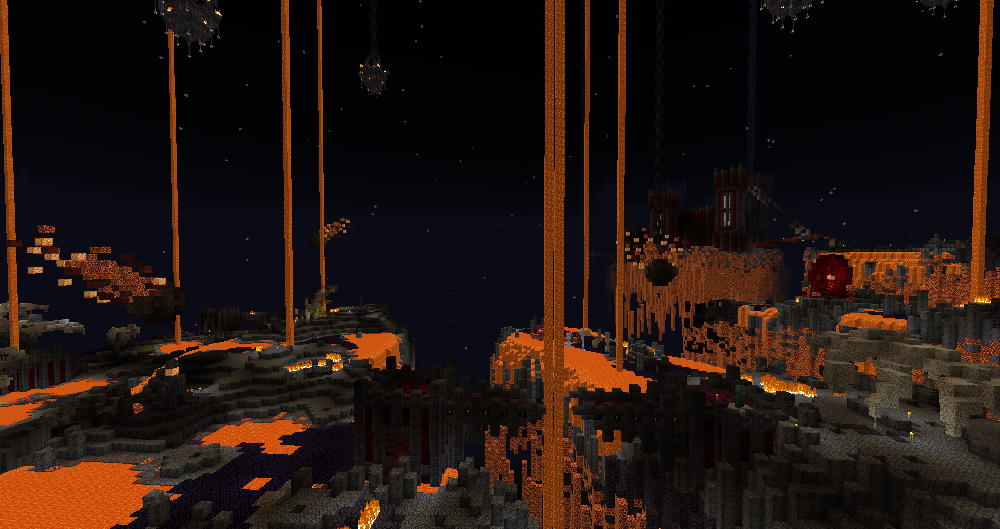
From Light Blue, to Gray, to Blue? What’s happening!? The perfect mix of danger and fun combat, the level design is alternating between building and land to keep it varied. Going into extremes also pushes the combat through mirroring the threats - ranged to answer ranged being hard or too dangerous to reach, and melee against mobs that devalue ranged through gap-closing abilities or spawn spam. Not to say other areas didn’t do that, but the distinction has never been as clear as here. A seemingly standard theme (nether fortress and mobs) yet the most fun I had.
Garden of Journeys - Brown
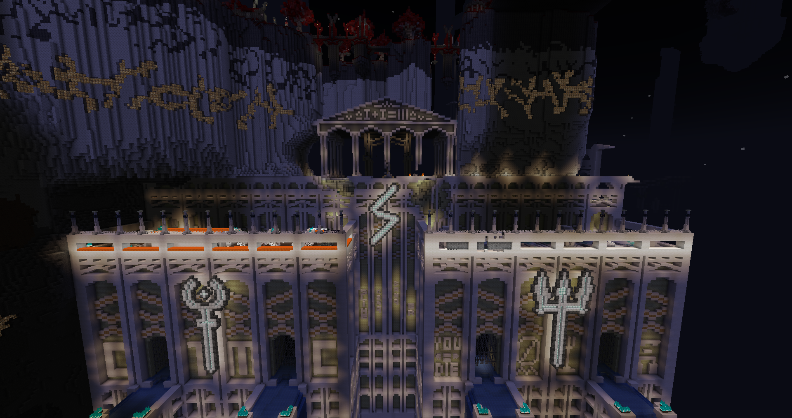
I like how thematic the enemies are, the area would be spotless if not for two specific mobs that are offensively unfair. The unkillable charging charged creeper that blasts through walls is just cheap deaths, and the haunting skeletons while less instantly deadly are just too frequent in casting so with the fast spawners and slow despawn of the reapers there’s no space to breathe - that the only seeming reasonable solution to deal with those mobs is despawning or running away (cheap cheese tactics) makes me want to say there’s something very wrong in the designs. I’ve used the reaper ability before and it’s not one suited for swarm mobs. Aside that, I love the trap pots triggering randomly when nearby, the trial paths and overall vibe of the area.
Bloody Madness - Green
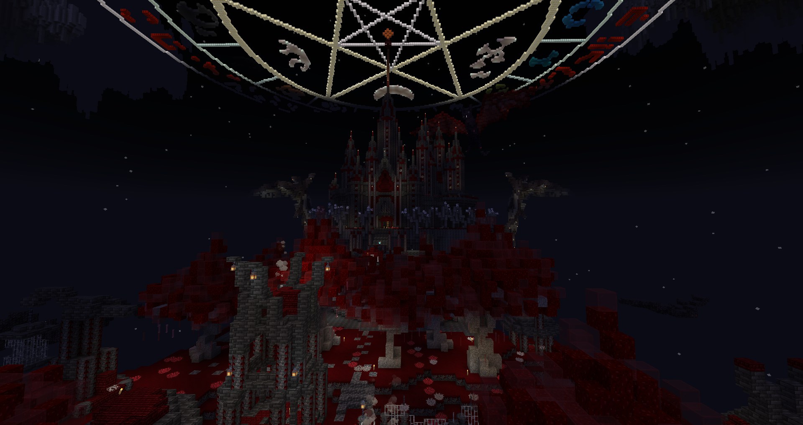
Anything blood themed is an instant win for me. At that point I had enough strong unique item that common gear takes a big dip in interest(still using the Vitality Plating and Arcane Reaver), even though I did find some essential parts in the area(mainly more max health armor pieces!). Somehow it felt like the area lacked one extra ranged threat, because almost everything was melee and the witches didn’t deal any damage. Spawner placement was semi obstructed and the coffins were top tier. Surprisingly the first area to have keys. This area is massively based for having locked barrels.
Nautilopolis - Red
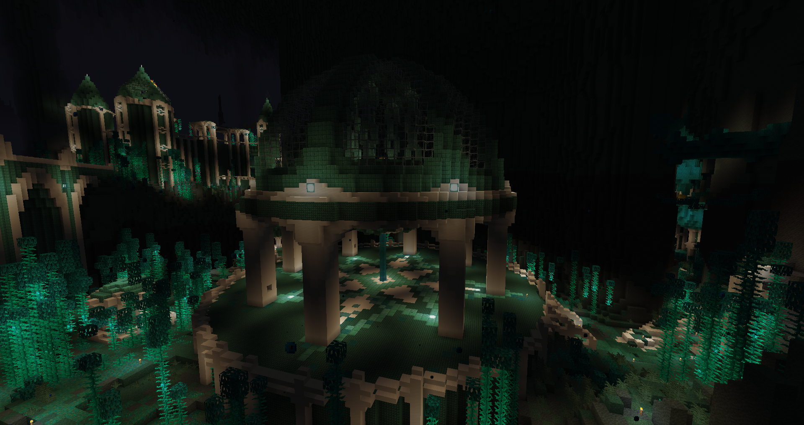
It’s a pretty fun area making use of the riptide tridents. The mobs clearly show they’re entering endgame, overall quite good, only a minor annoyance with the laser vindicators who have a tendency to do the smash jump into a big rebound so it’s a pain to kill them before the laser goes off. This is where I really get my final pieces to update my health build. Past that point, even before a bit, I would only be tickled; I reached immortality.
Cephalopod’s Fury - Black
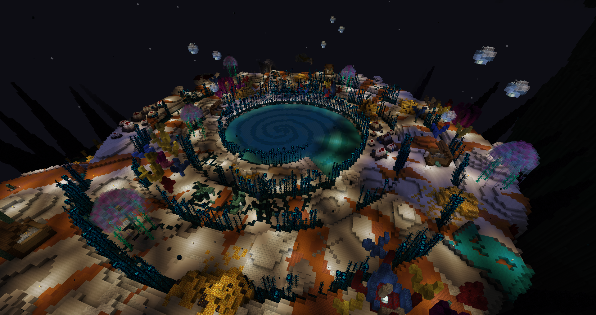
The boss itself looks incredible, and overall a fun battle, sadly I was met with technical issues and after getting stuck on the third phase(no idea how to break the shield) and leaving, the boss instantly died when I reentered the arena later. Other than the boss though, it’s hard to call the area more than a fancy boss arena, not bad but not too interesting either. After that I went to the glass desert from the hell path in Brown, and it somehow felt more spammy than the final areas, was not super fun.
Crimson Nocturne - Cyan
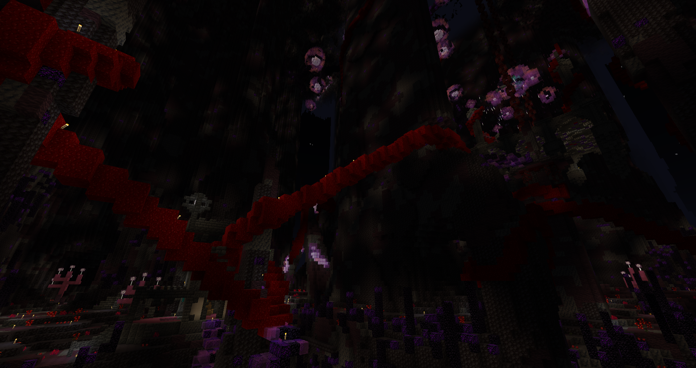
It’s been a while since I wasn’t a fan of an area’s layout. The vibe is pretty cool, but getting lost in the samey large paths wasn’t. The bonus were weirdly spread and I spent more time than I’d be comfortable saying searching the last one. Looking up shows nice aesthetics, but that’s not enough to offset the rest. The abyss watchers were a fun nod.
Lereaks Jungle - Purple
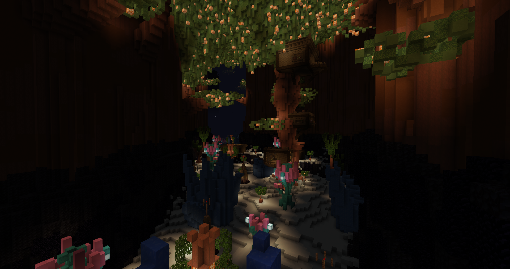
When I first read that name, I didn’t expect it’d be an ice themed area. The pottery houses were funny and unlike the other areas, the land was more like a snowy plain to reach the buildings without much combat. A nice refresher after the maze hell just before. The fox enemies were a bit strange and didn’t really do anything. The slugcat was a surprising final upgrade to my gear, unexpectedly the best helmet I could have ever wanted. This area is massively based for having locked barrels.
Darkblight Grotto - Lime
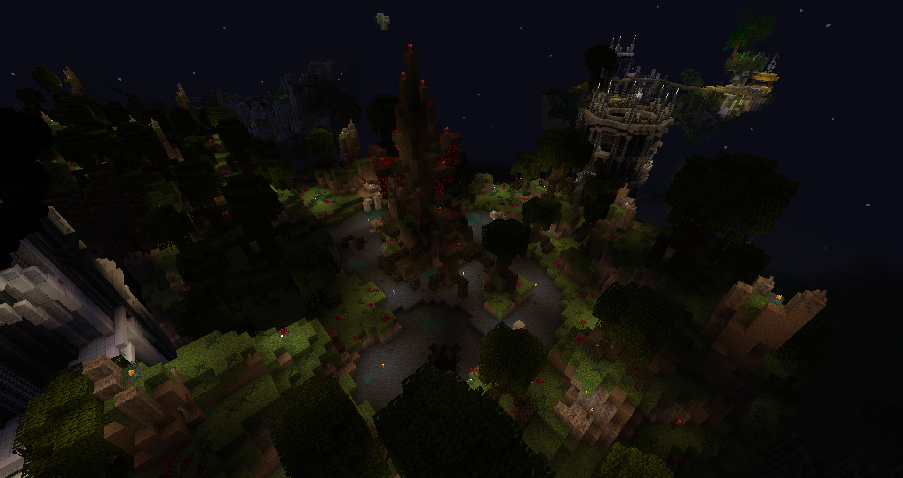
I walked into the area, fell into a random spider pit, and got the objective??? It mostly feels like wilderness, I’m not a fan, and it wasn’t helped by the cursing spider stealing all my 24h buffs so goodbye the 8 rubies… Unlike those, this was shorter than a basic potion length.
Waxing Icarus - Light Gray
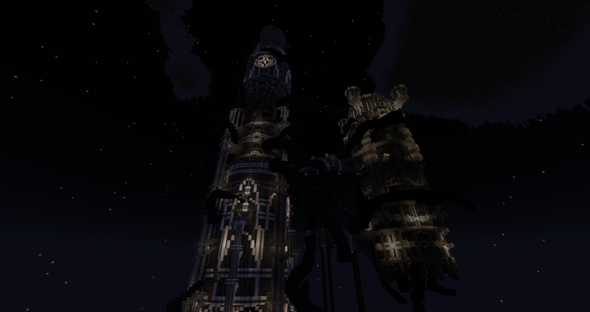
The white and black aesthetics, combined with the tendrils pathing around the building to break the layout’s flow, make for a strong theme. I like how it uses verticality to the maximum, the only area to do that in the map. The sort of spikes mechanic was ok I guess although too rarely relevant, and what sets the area back is the difficulty to see much at times - no colors and black on black paths.
Souldrain Reactor - Pink
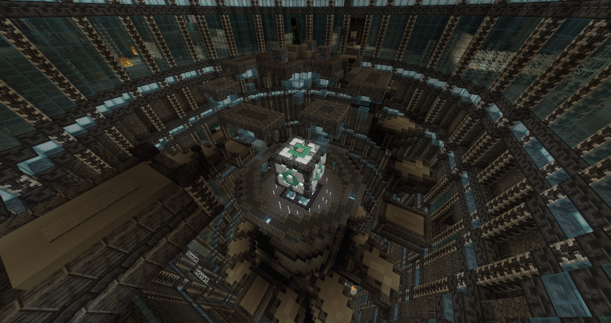
An interesting one to end the map on (my playthrough, that’s not the final area), the keys ensured I couldn’t steamroll it in 3 minutes since I had to explore around more. It’s pretty thematic and the magnetic core chamber for jump boosting is really fitting.
Conclusion
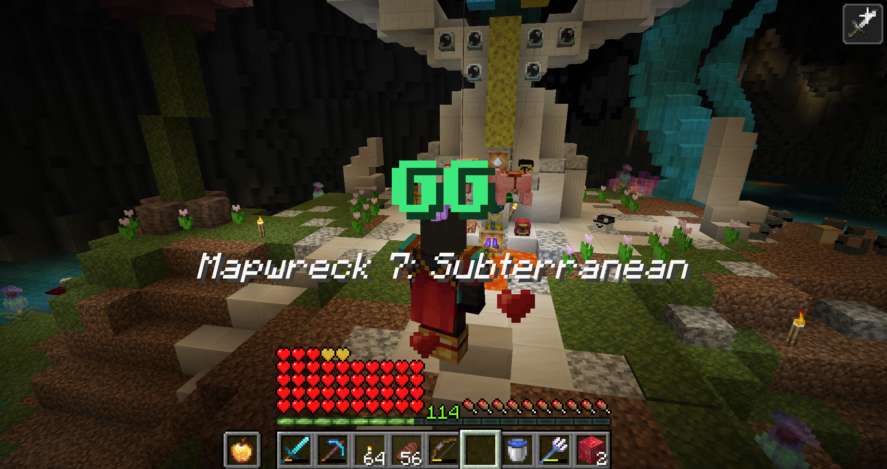
Gear and mob balance was honestly quite great, aside few exceptions there were no jarring spikes or cliffs. Made me use a decent amount of tridents and crossbows. For combat, the new mob range means so many extra hits, I feel like durability is going to become more and more of a legacy liability to get rid of. The tesseract having issues didn’t help. Felt like I was robbed of my flawless run with the 4 (2 from gray’s mechanic, and 2 from the brown immortal creepers) deaths I didn’t feel like I had a say in.
Speaking of flawless, the ender pouch is really really nice, it helped reduce some amount of inventory nightmare. Because there were too many currencies(what is this, a gacha game?!), materials, items, would be nice if some weren’t physical or less everything everywhere at once - to give an example, I obtain some lapis and mob essence but I’m tight on space, what do I do? You could say “store it in the ender pouch” but it’s a common material I am guaranteed to find more of right after, increasing the amount of management compared to having 5 slots permanently taken just for those drops. Despite the intent, I was not a fan of the torches, it’s already a pain enough to transport and they run out too fast since you can’t stock them efficiently anymore. Would’ve liked block/log recipes and more from coal blocks. Compared to Patient 0, there was a better mix of chests and d.i.e.s. this time.
I liked the idea of making bonus objectives have different uses, but it also felt that bonus objectives were devalued by just being able to buy them, making finding each no more than a token checkmark. Speaking of, the bonus box could’ve used the detection of the redstone lamp (pretty smart interaction btw), feels a bit awkward to have the advancement before getting the ruby. So many empty containers that could’ve been locked, but some areas were based so things are evolving.
The map lacked more static teleporters despite the amazing portp, because of that I felt pressured into not backtracking and pushing forward instead even if I was going a bit out of order. Some areas were too flat, layout suffering. I don’t usually make area ratings, but I was compelled this time: my most beloved areas were Blue, Green, Yellow. The ones I did not, were Lime, Cyan, White and Magenta(interestingly, those 4 are the ones I couldn’t manage to get a snapshot I liked). As for the rest? It’s all quite great. Honestly this map has an incredible quality even with the flaws.
While the process is still kinda cursed, the end result is becoming more and more enjoyable and a way to see a good variety of every mapmaker’s style. Thanks for hiding the names till the end.